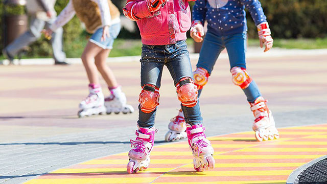
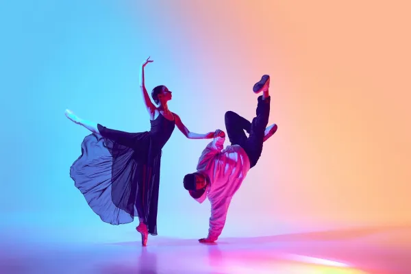
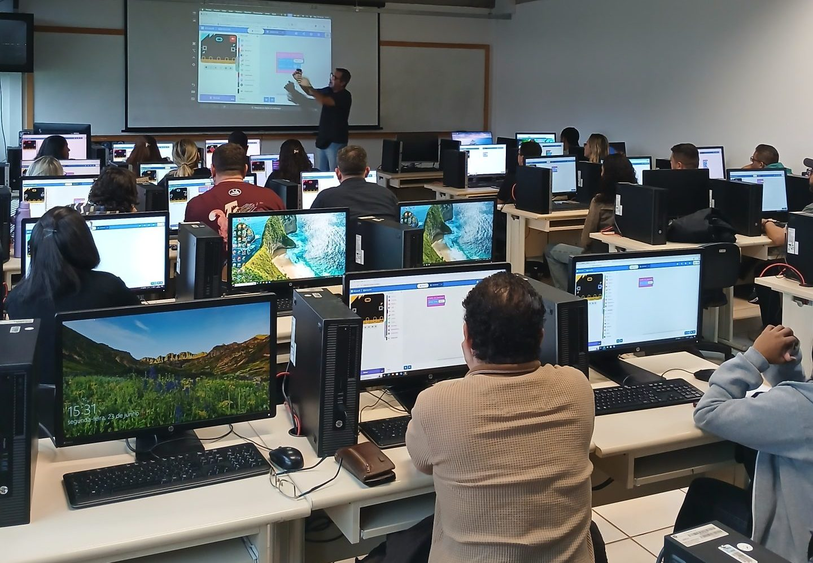

A patinação é o coração físico do projeto e a tradução literal de aprender a cair e levantar. Focamos nos primeiros passos, acolhendo iniciantes que nunca colocaram um par de patins nos pés.
A conexão com a "Ginga": A patinação exige equilíbrio, flexibilidade e a capacidade de se reajustar constantemente para não cair — a verdadeira ginga física. O esporte desenvolve a coordenação motora, a noção de espaço e, principalmente, a coragem. Mostrar a um jovem que ele é capaz de deslizar com autonomia após dezenas de quedas é a nossa forma de provar que ele pode superar qualquer obstáculo fora das pistas.
Seja um Doador Seja um Voluntário
Este pilar é o canal de expressão, identidade e voz dos nossos jovens. Com foco em ritmos urbanos, percussão, canto e danças populares, oferecemos um espaço onde o corpo e a mente trabalham em sincronia.
A conexão com a "Ginga": É aqui que o ritmo da vida ganha forma. A música e a dança resgatam a cultura, a ancestralidade e ensinam o trabalho em equipe (a "roda"). Os alunos aprendem a improvisar, a respeitar o tempo do outro e a usar a arte como uma ferramenta poderosa de transformação social e saúde mental.
Seja um Doador Seja um Voluntário
A tecnologia é a ferramenta que conecta a resiliência e a criatividade dos nossos jovens às oportunidades do futuro. Focamos no ensino de lógica de programação, desenvolvimento web, design e inovação digital.
A conexão com a "Ginga": Programar e desenvolver tecnologias exige uma enorme capacidade de adaptação e resolução de problemas (o famoso debug). Ensinamos os jovens a não serem apenas consumidores de tecnologia, mas criadores. Ter a "ginga" no mundo digital significa saber codificar soluções, construir sites, criar aplicativos e hackear o próprio futuro, garantindo espaço em um mercado de trabalho competitivo.
Seja um Doador Seja um Voluntário